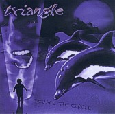

Home Artist links Label link

Triangle - Square The Circle
| Artist: | Triangle |
| Title: | Square The Circle |
| Label: | Zizania ZEGO100 (rereleased as Bee & Bee Records BBTR2001) |
| Length(s): | 65 minutes |
| Year(s) of release: | 1999 |
| Month of review: | 02/2000 |
Line up
Martijn Paasschens - vocals, keyboards
Roland ven der Stoep - guitars
Jan-Willem Verkerk - bass
Paul van der Zwaal - drums
Tracks
| 1) | Foreword To The Elements Of Life | 6.35
|
| 2) | Chasing The Shadows | 7.28
|
| 3) | The Center Shines | 11.09
|
| 4) | The Saddest Show | 10.29
|
| 5) | Amy | 5.39
|
| 6) | Pygmalion | 13.11
|
| 7) | Nature's Window | 11.06
|
Summary
You might have recognized in Triangle the former Square the Circle. I once
reviewed a demo of theirs, Pygmalion and now they have finished their first
regular release. It also seems this is the first band to put me in the
Thank You's. Thanks guys.
The music
The albums opens with the instrumental Foreword To The Elements Of Life.
After a few minutes of quiet keyboards the symphonic rock breaks loose.
Percussive piano, an active guitar, a bubbling bass, all the ingredients
are there. With the active bass and the high picthed guitar sound, the band
reminds me foremostly of Twelfth Night. Chasing The Shadows was also present
on the demo CD Pygmalion. Opening with sensitive piano playing, the vocals
enter aftre a minute so, sung soothingly. With the vocals I'm sometimes
reminded of Egdon Heath, but only in their quietest of songs. The singer
has a very sympathetic voice. Although it is hard for me to pin it down,
it all sounds very Dutch in a way. Maybe not even because of the actual
voice, but the phrasing or the lyrics themselves make clear where this band
comes from. After the first vocal part the tempo is upped considerably and
we come to a bombastic passage with lots of keyboards and somewhat heavy
guitars. The vocal melodies are outstanding and certainly sound very original.
The quieter bassriddled part borrowes, melodically, from Emerson Lake and
Palmer. Then the piano sets in again and we get a reprise of the first verse.
The Center Shines opens quite actively with drumming and keyboards, followed
by hasty vocals. This haste exemplifies the rush of everyday life, the second
verse, playing in a dream, is much slower and relaxed. Then the singer is
waking up again and tension is build up until the alarm clocks finally rings.
An impressive climax. The ending of the track features the same climax, but
afterwards the song becomes quite chaotic with lots of things going on, but
not necessarily in line with each other.
The Saddest Show opens with biting guitarwork and pouncing drumming, but then
we get ino an ethereal passage. The word 'spit' does not have the meaning
it should have here. "Dig" would be more appropriate, but a Dutch word for
'dig' is in fact 'spit'. It is probably done on purpose, because later it
becomes 'spit on' instead of 'spit in'. The subject by the way is television
shows reuniting people and more such. A dark vocal interlude then takes place
and after a while the oppresive music sets in. The vocal part brings relief,
but then in the style of Twelfth Night we get a quiet interlude
paving the way for the dramatic conclusion.
Amy is a bouncy piece. The vocal melody is not that special. After the vocal
part we come to a more moody passage, but the song ends fullblast, constrasting
nicely with the sensitive introduction to Pygmalion. The dramatism of this
track may remind some of a track such as The Killing Silence by Egdon Heath.
The song takes its time to get going, but it does so inexorably. There
are some really good parts in here including the upping of the tempo in the
middle and the "tiny flakes of sorrow" part. Very good. The music will
probably be considered neo-progressive by most (if you consider Egdon Heath on
The Killing Silence to be such, then this as well). However, the band often
works with moods and atmospheres as well, something less done in the
songoriented world of neo-progressive. Symphonic rock I feel is still the best
name for this type of music. It is also not true, that the music is constantly
very accessible. Like Cliffhanger, but to a lesser degree, the band plays
some rather adventurous parts as well.
Nature's Window is the closer, adding nothing really new to the spectrum:
a nice melodie and varied, but also a bit overly repetitive at times.
The guitar solo at the end makes good though.
The artwork is very nice and colourful. Including a novelty in the animal
kingdom: dolphins with what seem to be the colourings of the killer whale.
Conclusion
A very good debut album. The music is easily liked and has some great melodies.
It stands strongly in the symphonic rock tradition in the Netherlands.
Positive points are the good melodies, the clear recording, the dynamic
approach, the good tension building and the sympathetic voice. On the other
hand the band should take care that too much of this, can be detrimental
as well, especially structurally there seems to be more for variation.
References are Cliffhanger, Dilemma, Twelfth Night and Egdon Heath in no
particular order. A very good album and together with Like Wendy one of the
brighter recording hopes of the Netherlands. And there's room for growth.
© Jurriaan Hage